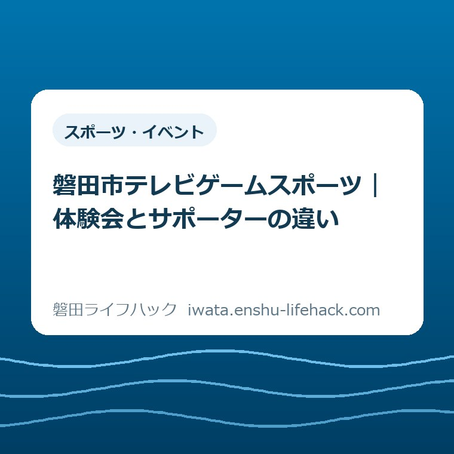

スポーツ・イベント
磐田市テレビゲームスポーツ｜体験会とサポーターの違い

この記事の要点
Q. 体験会とサポーターは、何が違うの？
A. 体験会は遊びや交流を試す場、サポーターは開催や操作説明を支える役割です。初心者にも入口がありますが、条件は各回・個別事情で異なります。11月20日の養成講座は開催予定で、受付開始とは分けて確認します。
まず、役割を増やす前に比べる
参加条件は開催回や個別の事情によって異なります。ここでは2026年10月24日に確認した磐田市の案内をもとに、体験会と交流サポーターの違いを整理します。年齢や参加費、申込期限を一律に決めつけず、予定表と各回の募集案内を分けて読みます。
買い物や通院の予定を動かし、家族と車の都合を合わせる。地域の集まりが一つ増えるだけでも、出かけるまでには手間がかかります。すでに町内の当番や家族の世話を担っている方なら、楽しそうという気持ちと、役目が増える心配が同時に出てきても不思議ではありません。
大石浩之（磐田市／不動産業）です。私は、地域とのつながりを持つことと、新しい役割を引き受けることは、分けて考えてよいと思います。遊びを試したい人と、場づくりも手伝いたい人では、先に確かめたいことが違うからです。
市のテレビゲームスポーツには、初心者が遊びを試す体験会と、開催や操作説明を支える交流サポーターの入口があります。この記事の比較軸はゲームの得意不得意ではありません。その場を楽しむことを中心にするか、ほかの人が楽しむ場を支えるかという役割の違いです。
「まだ手伝うと決めなくてよい」。これが今回、私が伝えたい判断です。申込書を埋めることだけが前進ではありません。自分が今ほしいのは交流の時間なのか、誰かを支える出番なのか。その区別がつくことも、家族と予定を組むための成果になります。
公式案内で比べる、体験会と交流サポーター
磐田市のシニア向けテレビゲームスポーツ体験会は、ゲーム経験のない方も歓迎する案内です。例として、手に持ったリモコンの動きでボウリングやテニスを行うゲーム、専用の太鼓とバチでリズムを楽しむゲームを紹介しています。内容は体験会ごとに異なると明記されています。
体験会で知りたいのは、操作が自分に合うか、ほかの参加者と同じ場で楽しめそうかということです。ただし、希望するゲームが必ずあるとは限りません。記事に出てくる種目名を、そのまま次回の実施内容や持ち物の指定として読むことは避けてください。
一方、磐田市のテレビゲームスポーツ交流サポーター養成講座では、体験会の開催や開催補助、ゲームの操作方法を教えることなどを役割として挙げています。自分で遊ぶ時間だけを見るのでなく、参加する人の時間を支える側の内容だと読み取れます。
意外なのは、教える側の入口でも、ゲームの知識や経験は不要と案内されていることです。養成講座では初めて使う人にも説明するとの記載があります。ゲームに詳しい人だけが候補になるわけではありません。ただし、経験不要という案内と、受講後にどれほど活動するかは別の話です。
以下の表は、公式に示された役割を生活の言葉に置き換えたものです。参加資格の比較表ではありません。付き添い、見学、活動回数など、案内だけで確定できない条件は、空欄を想像で埋めず確認事項として残しました。
| 比較する項目 | 体験会 | 交流サポーター |
|---|---|---|
| 中心となる関わり | 遊びや交流を体験 | 開催・開催補助・操作説明 |
| 初心者の入口 | 初心者を歓迎 | 養成講座は知識・経験不要と案内 |
| 先に確認すること | 該当回の内容と参加条件 | 講座の条件と受講後の役割 |
| この記事で確定しないこと | 見学や付き添いの可否 | 活動頻度・分担・費用 |

11月20日の予定と、過去の募集案内を分ける
2026年10月24日の確認では、養成講座の年間予定に、第3回は11月20日（金曜）午後、福田中央交流センターと掲載されています。表記は「予定」です。開催日が載っていることだけでは、申込みが始まっているとは判断できません。
同じページの下部には、第2回の9月30日、iプラザでの開催について、対象や申込先を示す詳しい案内が残っています。この対象条件、時間、申込フォームを、そのまま11月の回に当てはめないでください。ページを途中から読むと、別の回の情報をつなげてしまうおそれがあります。
体験会のページにも、10月15日の福田中央交流センターでの回について「募集」の表示が残っています。10月24日時点では、この開催日は過ぎています。実際に開催されたかどうかを記事から断定するのではなく、これから参加できる日として扱わないことを押さえます。
体験会の年間予定には、次の第4回として2027年2月5日（金曜）午後2時から4時、豊田福祉センターが示されています。こちらも予定の表示です。11月の養成講座と2月の体験会は別の枠なので、早い日に出かけられるという理由だけで同じ目的の催しとして比べないほうがよいと私は考えます。
家族に案内を転送するときも、ページの見出しだけでなく、体験会か養成講座か、何月何日の回かを一緒に伝えると話がかみ合います。「福田でゲームをする会」とだけ伝えると、遊びを試すつもりの人と、支える役を学ぶつもりの人で期待がずれてしまいます。

良い点――初心者にも二つの入口がある
私が良いと感じるのは、ゲームを知らないことが、そのまま地域の場に関わらない理由にならない点です。体験会だけでなくサポーター養成でも初心者に入口があります。「家にゲーム機がないから、自分には関係がない」と考える前に、活動の中身を読める案内になっています。
体験会の内容が一種類に固定されていないことにも意味があります。球技のような操作に関心がある人と、音楽やリズムに関心がある人では、楽しみの入口が違います。実施種目は各回で確認する必要がありますが、本人の興味を聞く言葉を家族が持てる点は助けになります。
支える側の役割が、開催、補助、操作説明など具体的に示されている点も評価します。「地域のために」という言葉だけでは、自分が会場で何をするのか見えません。役割の名詞が出ていれば、自分に合う仕事か、事前に聞きたいことは何かを考えやすくなります。
私は、初めて参加する人の戸惑いを覚えていることにも価値があると思います。ただし、これは市が示した選考基準ではなく、場づくりについての私の意見です。操作を速くできることと、相手が困っているところを待って聞けることは、同じ能力とは限りません。
地域の楽しみを、運動の上手さだけで選ぶ必要もありません。外を歩く時間が好きなら、磐田市ウォーキングマップの記事も判断材料になります。屋内で人と会う時間と、自分のペースで歩く時間では、暮らしへの入れ方が変わります。
注文したい点――引き受けた後の負担も見える案内へ
私が注文したいのは、サポーターになった後の時間の使い方です。今回確認した養成講座のページだけでは、活動の頻度、準備と片付けの分担、担当する範囲までは確定できません。これは負担が重いという意味ではなく、軽いとも断言できないという意味です。
講座が午後にあると分かっても、受講後の活動が同じ曜日や時間帯とは限りません。仕事や家族の送迎がある方にとっては、一度講座へ行けることと、その後も関われることは別々の判断になります。募集時に活動の例も示されれば、予定を組む側には助かると私は思います。
費用や物の準備も、曖昧なまま引き受けたくないところです。市の機材を活用した体験会という役割説明はありますが、そこから全ての持ち物が不要、交通費が出る、参加費が無料などとは言えません。この記事では金額を補わず、希望する回の案内で確かめる項目にとどめます。
年度の予定表と募集案内の区別も、もう少し見つけやすいとよいと感じます。開催日を過ぎた回に募集表示が残ると、読む人が日付を照合する手間を負います。職員の対応を推測して責めるのではなく、どの回の受付なのかが分かる表示を望む、というのが一利用者側からの意見です。
活動する人が休むときの連絡先や、難しい操作を誰に聞けるかも、参加の安心につながる情報です。これらの仕組みがないと決めつけているわけではありません。公開ページで分からなかった部分を、質問できる形にしておくほうが、期待だけで約束するより双方の行き違いを減らせます。
暮らしに置き換えると、比べるのは会場の時間だけではない
体験会を考えるなら、まず本人がその遊びを試したいかが中心になります。家族が楽しそうだと感じても、本人は大勢の場より少人数を好むかもしれません。どちらがよいかを外から決めず、画面を使う遊びに興味があるかを聞くところから比較を始めたいと思います。
サポーターを考える場合は、遊びへの興味に加えて、人に説明することや会の準備に関心があるかが判断材料になります。得意なことだけでなく、今の生活でどこまで時間を使いたいかも含めてください。できる能力があることと、今引き受けたいことは別です。
会場までの往復も生活の時間です。福田中央交流センターへ行く11月の講座と、豊田福祉センターで予定される2月の体験会では、住む場所や交通手段によって移動の組み方が変わります。私は会場名を確認してから、普段の買い物や通院との重なりを見る考え方が現実的だと思います。
家族の協力も、最初から決まっているものとして扱わないほうがよいでしょう。本人は送迎してもらえると思い、家族は自分で通うと思っていると、参加直前に調整が集中します。ここで挙げているのは特定のご家族の実話ではなく、予定を比べるときの仮の例です。
本人の希望を先に聞く姿勢については、磐田市の人生会議を取り上げた記事でも考えています。日常の余暇と医療・ケアの話は別ですが、家族の善意で本人の答えを先回りしないという姿勢は、交流の場を選ぶときにも持っていたいと思います。
健康面では、体験という名前だけで無理がないと判断しないでください。磐田市の交流事業ページには、体調不良や手足などに痛み・けががある場合は使わず、心配な方は使う前に医師へ相談するよう案内があります。個人への効果や参加の可否を、この記事が保証するものではありません。
大石の視点――楽しむだけの参加にも居場所がある
私は、地域活動を紹介するとき、支える側に回る人だけを褒める書き方には迷いがあります。運営する人がいなければ場は開けません。一方で、参加して楽しむ人がいなければ、交流の場としての役目も果たせません。どちらかを一段上の関わり方として示す必要はないと考えています。
まだ手伝うと決めなくてよい。私ならこの言葉を、参加をためらう人に向けた結論に置きます。体験会に興味があるという気持ちに、役員や当番の約束まで先に結びつけないためです。ただし、市の案内にない義務免除をここで保証するのではなく、約束の範囲を確認して決めるという考え方です。
支える側に関心がある人にも、最初から何でもできる人になる必要はないと思います。どんな役割を求められるのかを知り、自分が対応できる範囲と難しい範囲を言葉にする。それは消極的な態度ではなく、相手が準備しやすくなる説明です。ここは体験談ではなく、私の判断として書いています。
地域の交流を続けるには、会を開く側だけでなく、参加する側の暮らしも回ることが必要です。私は不動産業の立場から、家族の予定や移動の都合を抜きにして、場所があるから使えるとは考えません。催しでも、会場と日時の先にある生活の条件を見る姿勢は同じです。
対案・結論――今日は希望する関わり方を一つ考える
今日の一歩は、「まず遊びを試したい」「場づくりも知りたい」「まだ決めない」のうち、今の気持ちに近いものを一つ考えることです。申込みや役割の引受けまで一度に決める必要はありません。予定や条件を聞くときの出発点が一つできれば十分です。
遊びを試したい方は体験会の案内を、場づくりを知りたい方は養成講座の案内を読むと、確認する対象を絞れます。迷っている場合も、養成講座に出れば自動的に継続活動を引き受けるのかなど、気になる境目を市へ聞けます。回答を得る前に、参加後の義務を有りとも無しとも決めません。
別の運動や交流の場も比べたい方は、磐田市のスポーツ施設の選び方を参考にできます。道具を使う楽しさ、人と会う楽しさ、運動する時間のどれを求めているかで選択は変わります。一つの事業だけで余暇を全部満たそうとしなくてもよいでしょう。
11月20日の養成講座を検討する場合は、予定表にある日付と会場を手がかりに、該当回の募集案内が出ているかを確認してください。9月の申込フォームを使えるとはこの記事では案内しません。対象、費用、定員、受付状況は、最後に必ず磐田市の公式ページで確認してください。
よくある質問
ゲーム初心者でもサポーターを考えてよいですか？
市の養成講座案内は、知識や経験は不要としています。初めてゲームを使う人にも説明するとの記載があります。ただし、受講後の役割や活動頻度まで一律に分かるわけではありません。操作の経験だけで候補から外さず、希望する回の条件と、自分が担う範囲を市に確認してから考えられます。
11月20日の養成講座は申込みが始まっていますか？
2026年10月24日に確認した市公式ページでは、11月20日午後、福田中央交流センターでの開催は予定の表示です。掲載中の詳しい募集案内は9月30日の第2回分でした。第3回の受付開始は確認できていません。過去の回の対象やフォームを転用せず、市の最新案内を確認してください。
体験会に行ったらサポーターも引き受けるのですか？
市は体験会とサポーター養成講座を別々に案内しています。今回確認した体験会ページには、参加後にサポーターになる義務の記載はありません。ただし、各回の参加条件や受講後の活動条件を一律に保証するものではありません。楽しむだけの参加を希望する場合も、その希望を伝えて該当回の条件を市に確認してください。
参考にした公式情報
- テレビゲームスポーツ交流サポーター養成講座／磐田市（2026年10月24日確認）
- シニア向けテレビゲームスポーツ体験会／磐田市（2026年10月24日確認）
- テレビゲームスポーツ交流事業／磐田市（2026年10月24日確認）
最終確認日：2026-10-24 ／ 本記事は公表情報と執筆者の見解を分けて記載しています。制度・数値・公開状況は変更される場合があるため、最新情報は磐田市公式ページでご確認ください。